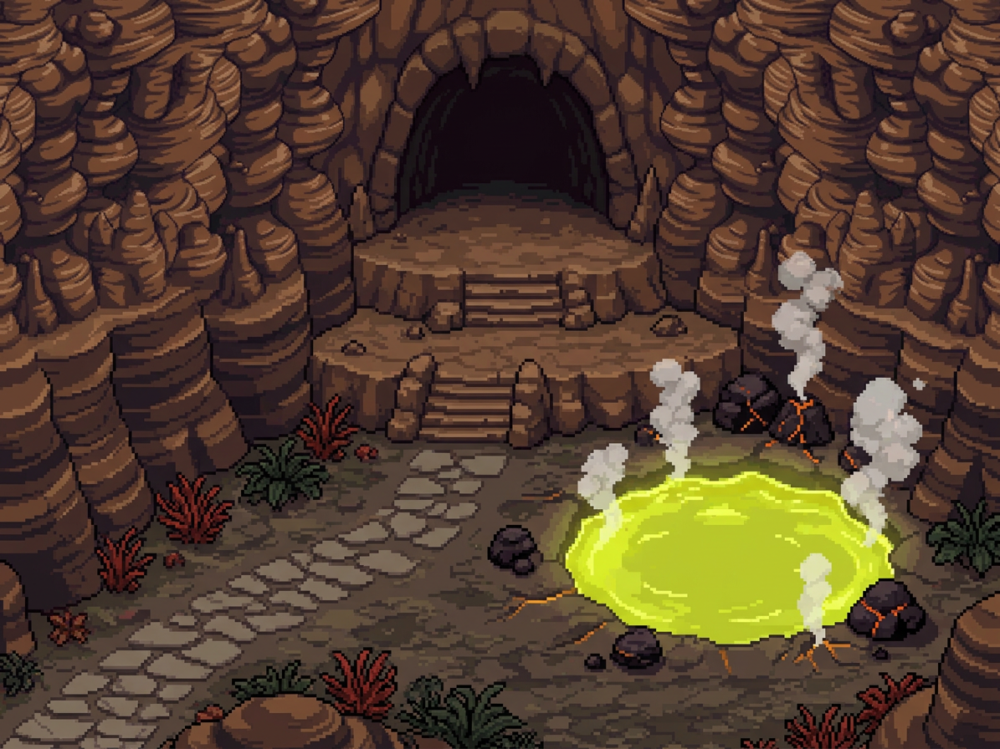
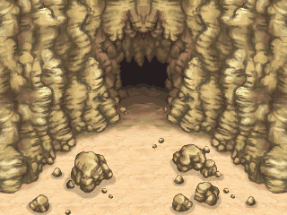
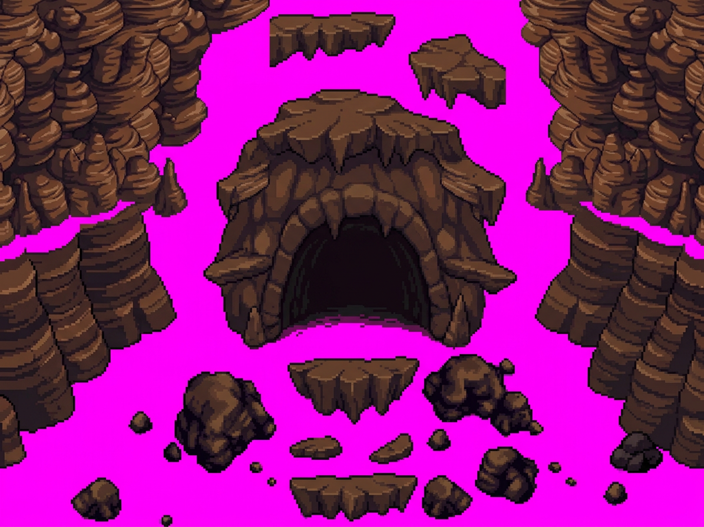

1. Guide de Composition (Générateur IA) Guide uniquement
Proposition de masses, de profondeur en baïonnette et de cadrage au format Halcyon / Palika. Ne fournit pas de tuiles certifiées.

2. Référence Canonique NDS (`Steam_Cave_entrance_TDS.png`) Source native
L'entrée originale 504×440 px avec disposition symétrique rectiligne sud-nord et palette officielle.

3. Référence Multicalques Halcyon (`Crooked Cavern`) Modèle architectural
Structure canonique de Palika avec 3 calques séparés : Base (0), Objects/Relief (1), Shadows (2).

4. Guide Découpage Falaises / Porche Étude de volume
Étude isolée des corniches rocheuses et de la voûte d'entrée sur fond contrasté.
